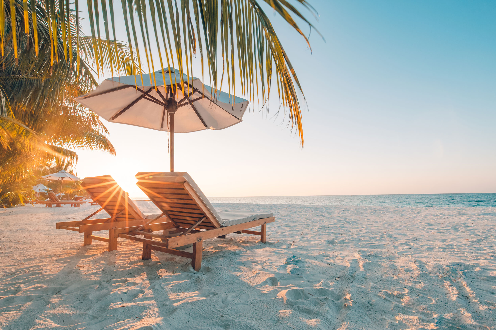
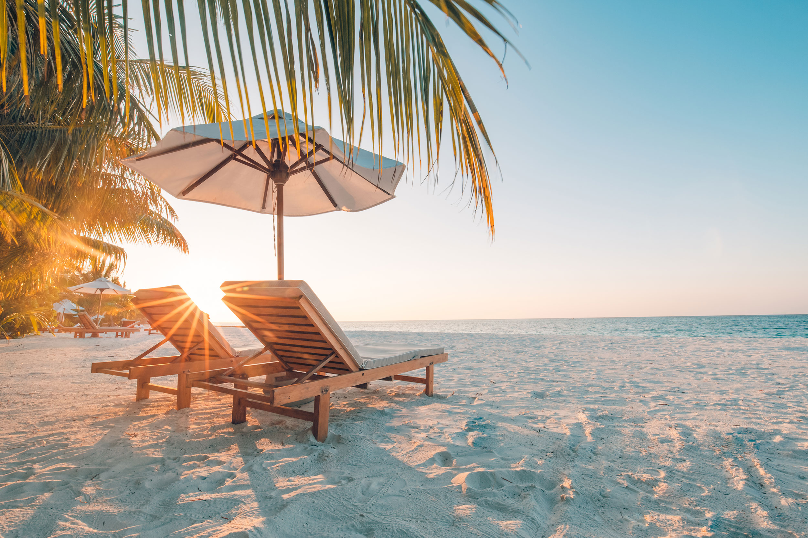

The Apps I Like During My Down Time
When I am taking a break from school or house work, I like to look at my phone and play
on my favorite apps. These apps include, but are not limited to, Amazon, Candy Crush, and Pinterest.
I love to do my online shopping on Amazon. I make lots of wish list for myself and my family members.
This helps me keep track of things I would like to buy for myself and gifts for my family. When I play
Candy Crush, I can feel my OCD kicking in. I feel an urgent need to win and make it to the next level.
Some people say that playing games makes them more relaxed, but I'm just the opposite. It gets me hyped
up to the point I can't sleep. This is why I don't play Candy Crush before I go to bed. I also love to
look at Pinterest. I have so many great ideas "pinned" on Pinterest. Some of my boards are personal ideas,
such as favorite recipes, gardening, and places I'd like to visit. Other boards deal with teaching, such
as FBLA ideas, Classroom Ideas, Computer Science, and New Technology. If I could accomplish 1/8 of what I
have marked on Pinterest, I will have accomplished a lot.
 
